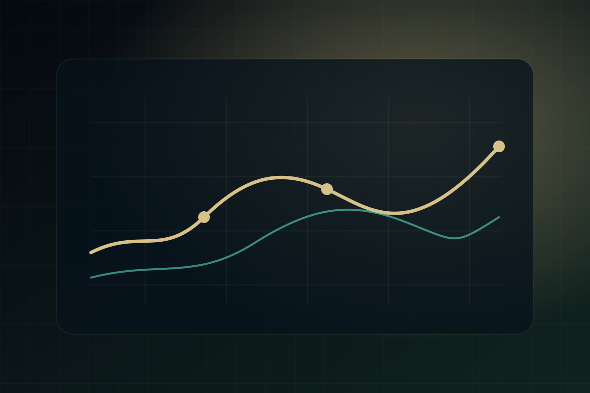
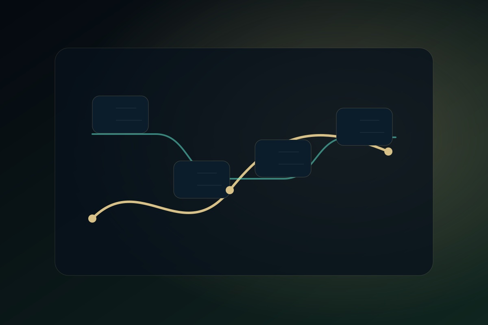
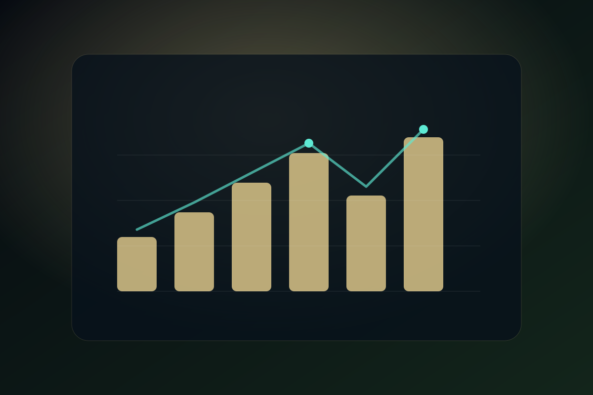

Macroeconomic Insights Pipeline
FRED API analytics project using Databricks, Spark, Delta Lake, a date-driven star schema, and a Power BI semantic model. Includes a published report and a public GitHub repository with implementation evidence.
I build analytics pipelines, semantic models, and decision-ready BI reports from messy operational and public datasets. This portfolio focuses on practical data work: ingestion, modeling, DAX/SQL logic, and Power BI delivery.

FRED API analytics project using Databricks, Spark, Delta Lake, a date-driven star schema, and a Power BI semantic model. Includes a published report and a public GitHub repository with implementation evidence.
Security analytics case study for public breach and incident data. The project frames ingestion, storage, modeling, and Power BI reporting patterns for incident drill-downs by geography, vector, and severity.

Large public REES46 dataset exploration focused on events, categories, brands, carts, and conversion signals. The work highlights data shaping, model size constraints, and analyst-friendly Power BI UX.

Simulated sales and gross-profit report built around time intelligence, country and product segmentation, waterfall analysis, and margin-focused executive reporting.
Curated public AI model metadata transformed into a Power BI report for model launches, training effort, parameter growth, and model-family comparisons over time.
Hiring managers should be able to inspect both the report and the thinking behind it. I structure projects around source data, transformations, model design, business questions, and a clear delivery layer.
Build repeatable ingestion and transformation flows with Python, SQL, Spark, Airflow patterns, and cloud storage.
Design fact/dimension structures, date tables, metric layers, and Power BI semantic models that are easy to reason about.
Turn raw datasets into focused BI reports with filters, drill paths, KPI logic, and a clear narrative for decision makers.
Use GitHub and project documentation where possible so the work is reviewable beyond screenshots and report embeds.
Separate public/simulated case studies from production outcomes, and explain assumptions instead of overstating impact.
Translate open-ended business questions into datasets, measures, visuals, and delivery artifacts that teams can actually use.
Open to data engineering, analytics engineering, and BI roles where clean pipelines and practical reporting matter.